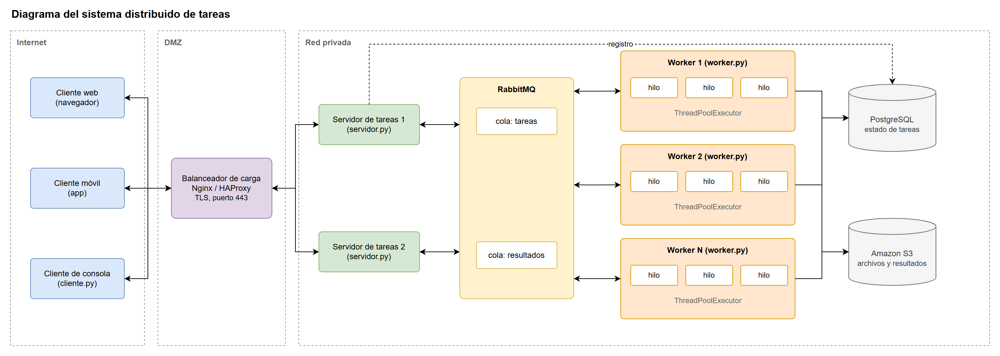
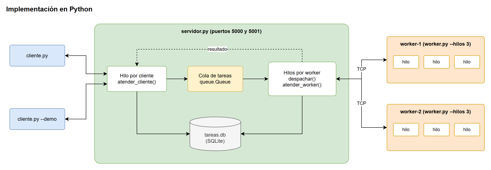
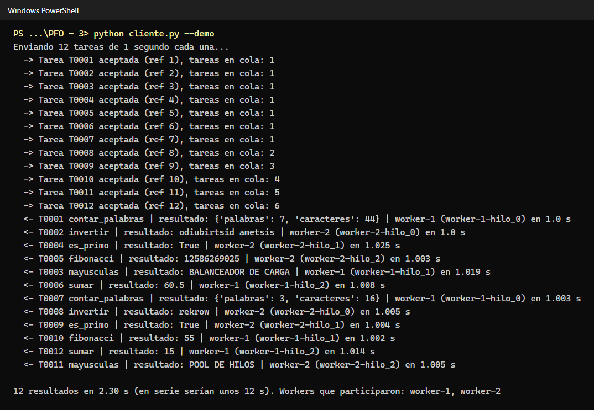
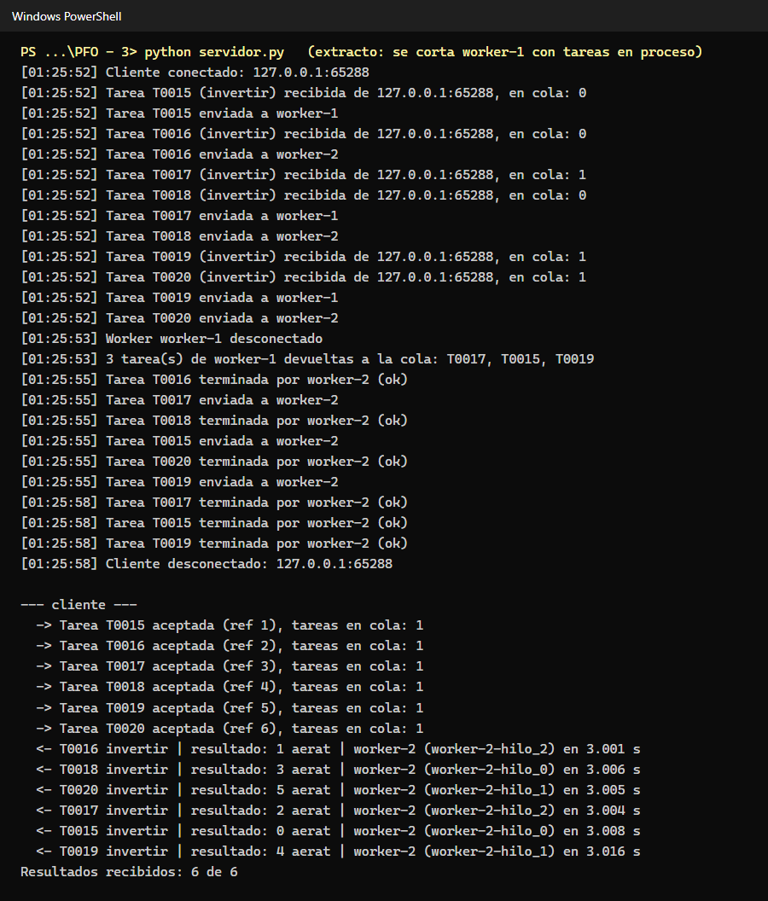
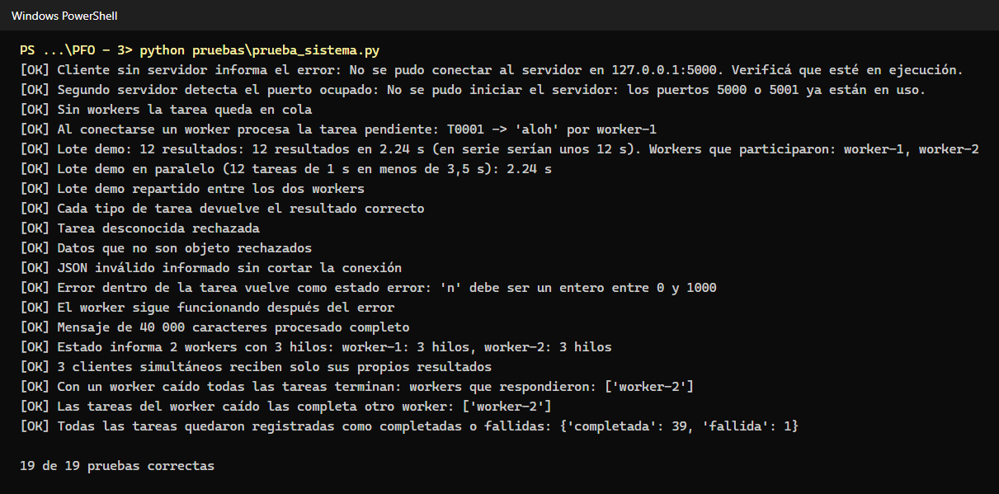

Programación sobre Redes, Tecnicatura Superior en Desarrollo de Software (IFTS N° 29)
Alumno: Fernando Rodriguez · Código fuente: github.com/Ferchulobo777/pfo3-sistema-distribuido
Sistema de procesamiento de tareas con arquitectura distribuida sobre sockets TCP. Un servidor recibe tareas de varios clientes, las encola y las reparte entre workers independientes; cada worker resuelve varias tareas a la vez con su pool de hilos y el resultado vuelve al cliente que hizo el pedido.


| En el diagrama | En el código |
|---|---|
| Cliente | cliente.py (menú y modo --demo) |
| Servidor de tareas | servidor.py: puerto 5000 para clientes y 5001 para workers |
| RabbitMQ | queue.Queue dentro del servidor |
| Worker con pool de hilos | worker.py con ThreadPoolExecutor |
| PostgreSQL | tareas.db (SQLite) |
python servidor.py python worker.py --nombre worker-1 --hilos 3 python worker.py --nombre worker-2 --hilos 3 python cliente.py # o: python cliente.py --demo
Solo usa la biblioteca estándar de Python 3.8 o superior.
19 pruebas de extremo a extremo con procesos reales (python pruebas/prueba_sistema.py): todas correctas.



El resto de las capturas y la documentación completa están en el README del repositorio.